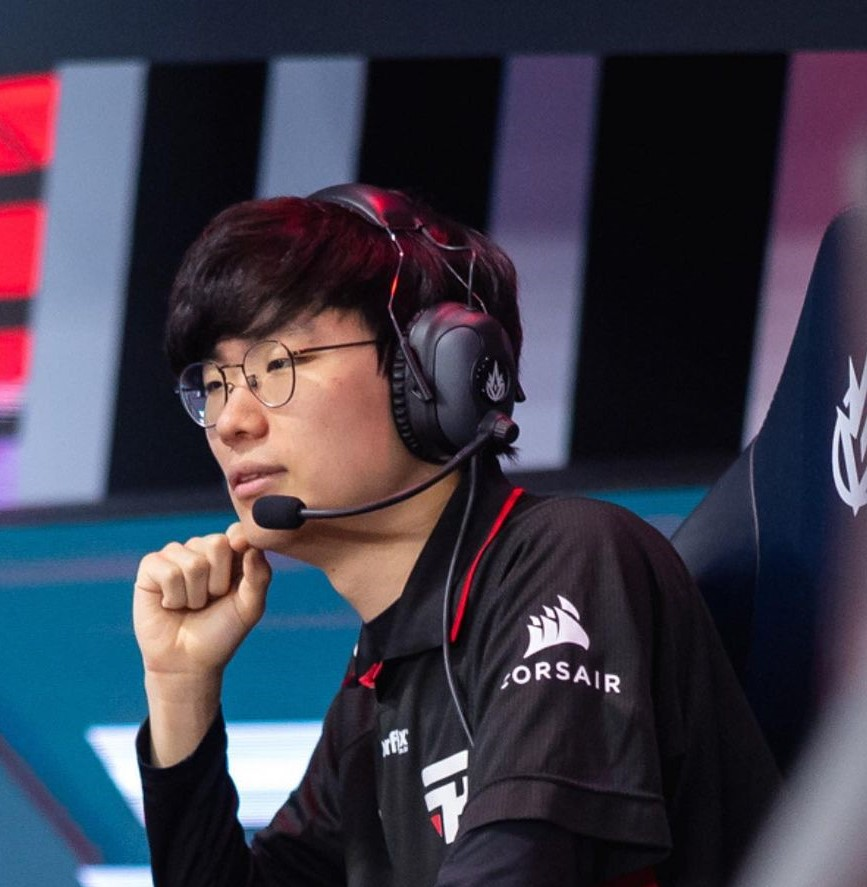
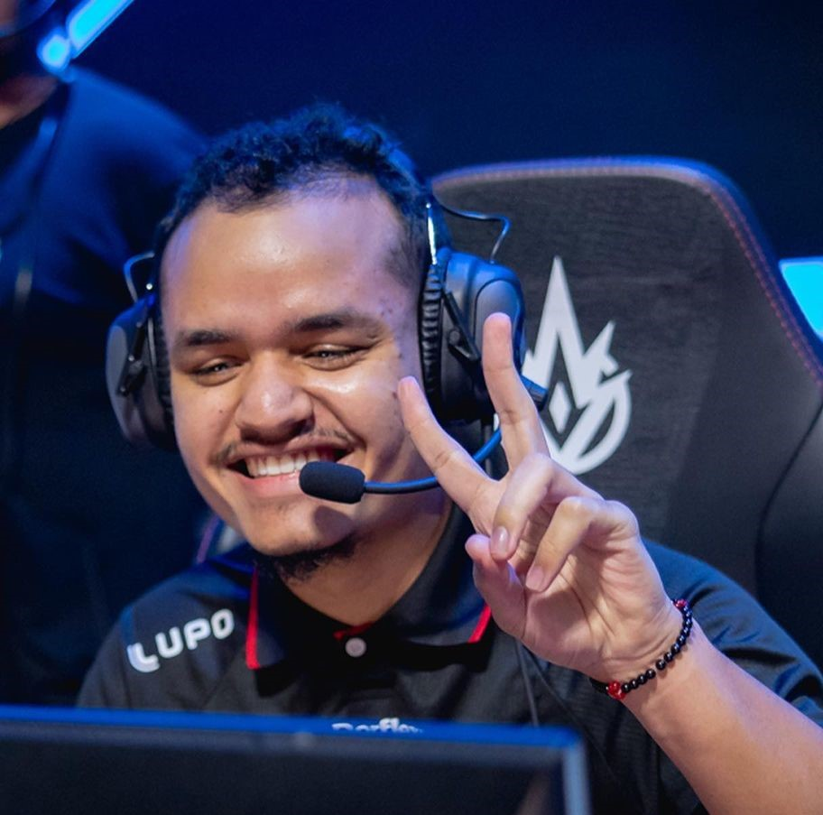
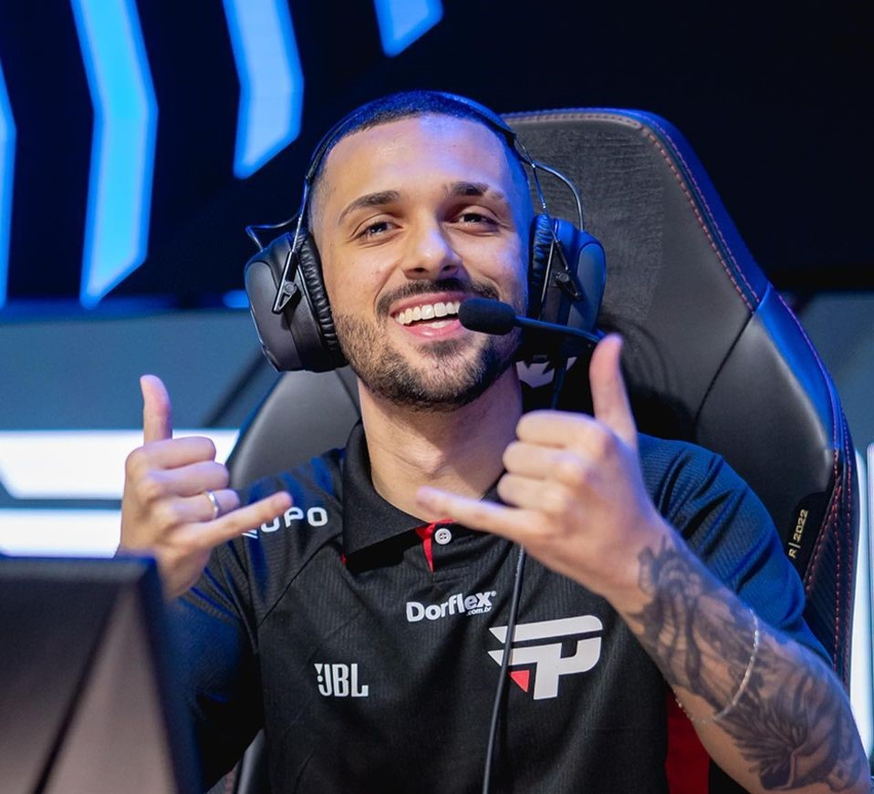
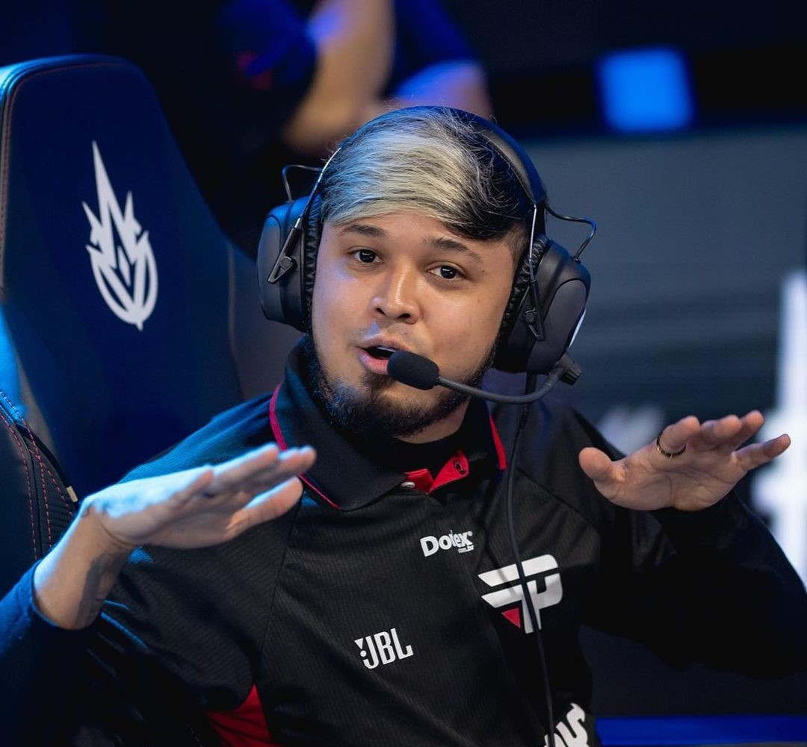
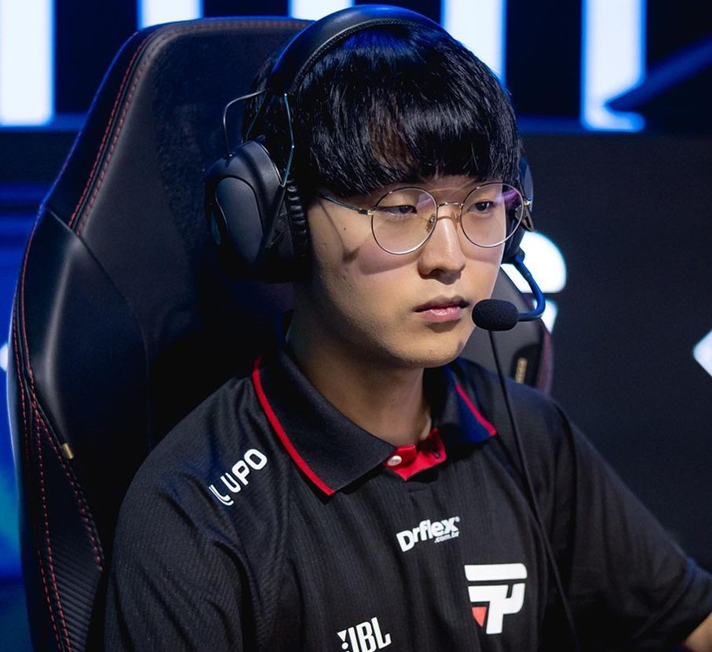
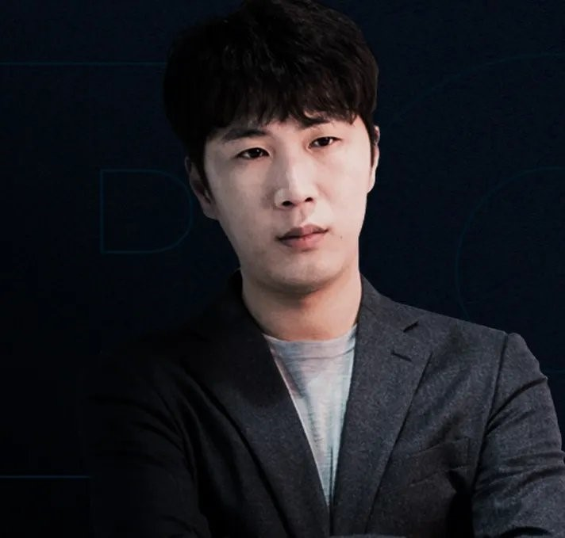

-
Wizer
Topo
Nosso coreano abrasileirado, Wizer, entrou para a PaiN Gaming em dezembro de 2021. Desde então, ele tem vestido a camisa do time com orgulho e conquistado o coração da torcida. Apesar de enfrentar altos e baixos, Wizer nunca decepciona, mantendo-se constantemente entre os melhores na sua posição. Seu alto desempenho e profundo conhecimento do jogo têm sido fundamentais para a equipe, tornando-o um pilar importante dentro do campeonato e contribuindo significativamente para a força da PaiN Gaming no CBLOL.
-
carioK
Caçador
Com a gente desde 2020 trazendo nosso tri em 2021, o melhor jungler do Brasil conhecido pela gameplay agressiva e incisiva que deixa poucos espaços pros adversários. Apesar dos últimos resultados do time ele segue vestindo a camisa e representando o time e a torcida de maneira excelente sempre mantendo o nivel e se destacando entre os jogadores de sua posição.
-
dyNquedo
Meio
Jogou seu primeiro split com a gente em 2022, desde sua entrada deixou claro sua vontade de ficar por aqui até se aposentar, muito carismático acabou conquistando o coração da torcida muito rapidamente. Um nome sempre citado quando falamos de melhores mid laners do cblol dynquedo nunca entregou um resultado abaixo do esperado. Constantemente cobrado pela torcida ele não desiste de trazer a taça pra casa.
-
titaN
Atirador
titaNzada xesquedele, o nome fala por si.O homem que veio com o peso de salvar o time e tem feito um trabalho impecável. Sendo comparado com brTT desde que chegou ao cenário, já entrou na paiN sendo chamado de idolo e vem mostrando que merece o titulo, além do alto desempenho dentro de jogo ele vem sendo indispensável até mesmo nas outras lines da paiN.
-
Kuri
Suporte
Chegou junto com titaN pra formar a melhor botlane do campeonato. Kuri traz uma gameplay agressiva e inteligente mantendo o nivel alto junto com os companheitos de equipe. Coleciona Mvp's e apesar da barreira de idioma mantém uma sinergia inacreditável com os companheiros de equipe chamando jogadas incriveis e mantendo nossa paiN no topo da tabela.
-
Xero
Head Coach
Chegou na paiN em 2020 e de lá pra cá todos os jogadores que passaram por ele só tem elogios. O cara tem um metodo e anda com a receita do lol em baixo do braço. Assim como todos os outros também é muito cobrado e pressionado pela torcida e com certeza está sempre buscando mais. Mantém o time sempre no topo mas ainda busca implacávelmente pelo titulo.